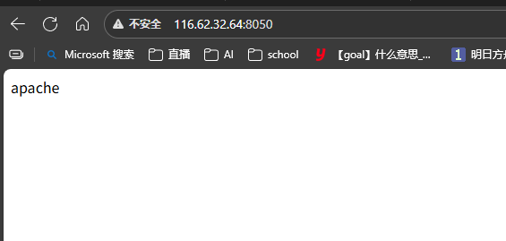

Dockerfile-使用-docker语法-docker-compose #
dockerfile #
Dockerfile 是一个文本文件，包含了构建 Docker 镜像的所有指令。
Dockerfile 是一个用来构建镜像的文本文件，文本内容包含了一条条构建镜像所需的指令和说明。
通过定义一系列命令和参数，Dockerfile 指导 Docker 构建一个自定义的镜像
我们创建一个基础dockcerfile文件并写入内容
[root@iZbp156z1grx9b9s1305p0Z test]# cd dockertest/
[root@iZbp156z1grx9b9s1305p0Z dockertest]# ls
Dockerfile
[root@iZbp156z1grx9b9s1305p0Z dockertest]# ls -al
total 12
drwxr-xr-x 2 root root 4096 Sep 25 23:01 .
drwxr-xr-x 3 root root 4096 Sep 25 22:37 ..
-rw-r--r-- 1 root root 63 Sep 25 23:01 Dockerfile
[root@iZbp156z1grx9b9s1305p0Z dockertest]# cat Dockerfile
FROM nginx
RUN echo "apache" >/usr/share/nginx/html/index.html
[root@iZbp156z1grx9b9s1305p0Z dockertest]# pwd
/root/test/dockertest
[root@iZbp156z1grx9b9s1305p0Z dockertest]#
FROM nginx 表示镜像名字
RUN echo "apache" >/usr/share/nginx/html/index.html 执行的命令
然后我们build相当于pull了下来 名字是nginxtest9.26 描述v3
[root@iZbp156z1grx9b9s1305p0Z dockertest]# pwd
/root/test/dockertest
[root@iZbp156z1grx9b9s1305p0Z dockertest]# docker build -t nginxtest9.26:v3 .
[+] Building 0.7s (6/6) FINISHED xxx
=> [1/2] FROM docker.io/library/nginx:latest@sha256:0d17b565c37bcbd895e9d92315a05c1c3c9a29f762b011a10c54a66cd53c9b31 xxxx
[root@iZbp156z1grx9b9s1305p0Z dockertest]#
输入命令doker images 查看镜像状态
[root@iZbp156z1grx9b9s1305p0Z dockertest]# docker images
REPOSITORY TAG IMAGE ID CREATED SIZE
nginx test2 d5acce9a304d 12 hours ago 141MB
nginxtest9.26 v3 d5acce9a304d 12 hours ago 141MB
nginx v3 7b28ab7a3fa3 13 hours ago 141MB
启动镜像
[root@iZbp156z1grx9b9s1305p0Z dockertest]# docker run -d -p 8050:80 d5acce9a304d
17f22daa865341ac328394b9d51c1ebbbea770a8b4173b0dd1da2dca9f579ae6
[root@iZbp156z1grx9b9s1305p0Z dockertest]#

这里我两个ID相同因为
镜像 ID 由内容（分层）决定，而非标签 ——内容不变，ID 就不变。你看到的多个镜像 ID 相同，是因为它们共享完全相同的分层数据，只是标签不同（相当于给同一个文件贴了多个文件名标签）。
如果想生成新 ID 的镜像，需要实际修改镜像内容（比如修改 Dockerfile 指令、修改 index.html 内容、更换基础镜像版本等），这样构建时才会生成新的分层和新的镜像 ID。
如果你run 想设置两个命令可以如
Docker 镜像采用 “分层存储” 机制，每一条 Dockerfile 指令（如 RUN、COPY、ADD 等）都会生成一个新的只读层，这些层叠加起来构成最终的镜像。如果存在过多无意义的层，会导致镜像体积膨胀，原因可以通过具体例子理解：
FROM centos
RUN yum -y install wget \
&& wget -O redis.tar.gz "http://download.redis.io/releases/redis-5.0.3.tar.gz" \
&& tar -xvf redis.tar.gz
不要 因为每执行一次都会在 docker 上新建一层。所以过多无意义的层，会造成镜像膨胀过大
FROM centos
RUN yum -y install wget
RUN wget -O redis.tar.gz "http://download.redis.io/releases/redis-5.0.3.tar.gz"
RUN tar -xvf redis.tar.gz
解释file命令语法 #
CMD
类似于 RUN 指令，用于运行程序，但二者运行的时间点不同:
CMD 在docker run 时运行。
RUN 是在 docker build。
EXPOSE
帮助镜像使用者理解这个镜像服务的守护端口，以方便配置映射。
在运行时使用随机端口映射时，也就是 docker run -P 时，会自动随机映射 EXPOSE 的端口。
docker-compose #
Dockerfile 是 “造零件（镜像）”，docker-compose 是 “装机器（多容器应用）”。
[root@iZbp156z1grx9b9s1305p0Z dockertest]# cat docker-compose.yml
version: '3.8' # 指定docker-compose版本
services:
# 定义Nginx服务，名称为nginx-test
nginx-test:
build: . # 表示从当前目录的Dockerfile构建镜像
ports:
- "8080:80" # 端口映射：主机的8080端口映射到容器的80端口（Nginx默认端口）
container_name: my-nginx-container # 容器名称，方便识别
restart: unless-stopped # 重启策略：除非手动停止，否则总是重启
# 可选：挂载目录（如果需要实时修改index.html内容，可以添加以下配置）
# volumes:
# - ./index.html:/usr/share/nginx/html/index.html
[root@iZbp156z1grx9b9s1305p0Z dockertest]#
build: . 从dockerfile搭建
然后输入命令
docker-commpose up -d -d表示在后台运行
[root@iZbp156z1grx9b9s1305p0Z dockertest]# ls
Dockerfile
[root@iZbp156z1grx9b9s1305p0Z dockertest]# docker-compose up -d
/usr/local/lib/python3.6/site-packages/paramiko/transport.py:32: CryptographyDeprecationWarning: Python 3.6 is no longer supported by the Python core team. Therefore, support for it is deprecated in cryptography. The next release of cryptography will remove support for Python 3.6.
from cryptography.hazmat.backends import default_backend
Creating network "dockertest_default" with the default driver
Building nginx-test
[+] Building 0.7s (6/6) FINISHED docker:default
xx
=> [1/2] FROM docker.io/library/nginx:latest@sha256:0d17b565c37bcbd895e9d92315a05c1c3c9a29f762b011a10c54a66cd53c9b31 xxx
WARNING: Image for service nginx-test was built because it did not already exist. To rebuild this image you must use `docker-compose build` or `docker-compose up --build`.
Creating my-nginx-container ... done
[root@iZbp156z1grx9b9s1305p0Z dockertest]# docer ps
-bash: docer: command not found
[root@iZbp156z1grx9b9s1305p0Z dockertest]# docker ps
CONTAINER ID IMAGE COMMAND CREATED STATUS PORTS NAMES
6423922c9200 dockertest_nginx-test "/docker-entrypoint.…" 8 seconds ago Up 7 seconds 0.0.0.0:8080->80/tcp, :::8080->80/tcp my-nginx-container
17f22daa8653 d5acce9a304d "/docker-entrypoint.…" 13 minutes ago Up 13 minutes 0.0.0.0:8050->80/tcp, :::8050->80/tcp
发现镜像名字dockertest_nginx-test成功搭建了通过docker-compose